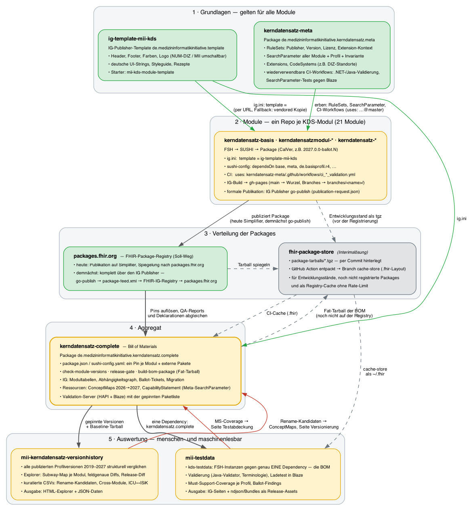

MII Kerndatensatz Complete
2027.0.0-ballot.19 -

MII Kerndatensatz Complete
2027.0.0-ballot.19 -

MII Kerndatensatz Complete - Local Development build (v2027.0.0-ballot.19) built by the FHIR (HL7® FHIR® Standard) Build Tools. See the Directory of published versions
Der Kerndatensatz entsteht nicht in einem Repository, sondern in einem Verbund aus Repositories mit klar verteilten Rollen. Diese Seite zeigt den gesamten Stack von den modulübergreifenden Grundlagen über die Modul-Repositories und die Verteilung der Packages bis zur BOM und ihren Auswertungen — wer was liefert, wer von wem erbt und wo die Ergebnisse menschen- und maschinenlesbar ankommen.

Generiert aus dev-stack.dot via Graphviz. Grün = stabile
Grundlage bzw. Soll-Weg (Registry), gelb = Ballot-Linie 2027, grau = Interimslösung. Graue
gestrichelte Kanten = Interims-Pfade über den Package-Store, rote Kanten = Rückfluss
der Auswertungen in diese BOM.
Zwei Repositories liefern das, was alle Module gemeinsam haben — die Module schreiben es nicht ab, sondern referenzieren es.
kerndatensatz-meta
(Package de.medizininformatikinitiative.kerndatensatz.meta,
IG) ist die
fachlich-technische Grundlage. Es enthält
mii-pr-meta-searchparameter und einer Invariante für die
Code-Konvention — Module definieren keine eigenen SearchParameter, sie werden
hier gepflegt und getestet;ci_dotnet_validation.yml,
ci_java_validation.yml und die SearchParameter-Tests gegen einen Blaze-Server.
Ein Modul-Repo ruft sie per uses: medizininformatik-initiative/kerndatensatz-meta/.github/workflows/…
auf; eine Korrektur am Validierungs-Workflow erreicht damit alle Module ohne
Änderung in den Modul-Repos.ig-template-mii-kds
(Demo) ist das
Darstellungs-Template für den HL7 IG Publisher, aufgesetzt auf fhir2.base.template:
Header, Footer, Farben und Logo mit zwei umschaltbaren Corporate Designs (NUM-DIZ
als Default für die Zeit nach dem MII-Förderende, MII), deutsche UI-Strings für das
Basistemplate, Styleguide und Schritt-für-Schritt-Rezepte. Ein Modul nennt es in
ig.ini — der IG Publisher wendet es beim Build an. Solange das Template-Package
nicht auf einer Registry liegt, geschieht das per GitHub-URL (Interimsform,
Beschluss 2026-08-28) mit einer vendored Kopie als Offline-Fallback. Neue Module
starten mit dem Starter-Repo
mii-kds-module-template,
das Template und Meta-Workflows bereits referenziert.
Jedes der 21 Module lebt in einem eigenen Repository der
MII-GitHub-Organisation
(kerndatensatz-basis, kerndatensatzmodul-*, kerndatensatz-*). Der Ablauf ist
überall gleich:
sushi-config.yaml deklariert die
Abhängigkeiten (base, meta, de.basisprofil.r4, externe Pakete) in exakten
Versionen.main landet auf der
Wurzel der GitHub Pages, jeder andere Branch unter branches/<name>/ — während
Ballotierung und Template-Migration tragen diese Branch-Builds den aktuellen Stand.2027.0.0-ballot.N),
GitHub-Release mit dem Tarball als Asset. Die formale Publikation läuft über
den IG Publisher: publication-request.json beschreibt die Version, der
go-publish-Workflow baut sie reproduzierbar, validiert, legt die
Publikationsstruktur mit package-list.json und package-feed.xml auf
GitHub Pages ab und erzeugt den Patch für die FHIR-IG-Registry — jeder dieser
Schritte ist bewusst manuell freizugeben.publish-simplifier lädt exakt das Package des go-publish-Laufs hoch, damit
Registry und Publikation identisch sind. Demnächst entfällt dieser Schritt:
packages.fhir.org liest das Package direkt aus dem Feed der
IG-Publisher-Publikation.Welche Version je Modul gerade gilt, zeigt die Gesamtübersicht; wie weit die Module untereinander konsistent sind, der Abhängigkeitsgraph.
Der Soll-Weg ist die FHIR-Package-Registry packages.fhir.org: Jeder
Konsument — Module, diese BOM, Standorte — löst die Packages mit SUSHI oder Firely
Terminal von dort auf. Wie ein Package dorthin kommt, ist gerade im Übergang:
packages.fhir.org gespiegelt.package-feed.xml, die
FHIR-IG-Registry kennt den Feed, und packages.fhir.org übernimmt das Package
daraus. Simplifier ist dann kein Publikationsschritt mehr.Daneben gibt es, ausdrücklich als Interimslösung, den
fhir-package-store.
Er ist ein per Commit gepflegter Ablageort: Tarballs werden in package-tarballs/
eingecheckt, eine GitHub Action entpackt sie in das .fhir-Layout und schreibt das
Ergebnis in den Branch cache-store. Ein CI-Workflow checkt diesen Branch als
~/.fhir aus und hat damit alle Packages, ohne die Registry anzufragen. Das löst
drei Probleme der Entwicklungsphase:
Der Store ist kein Ersatz für die Registry und soll mit der Publikation der
Packages auf packages.fhir.org entfallen. Bekannte Einschränkung: Der Cache-Workflow
zerlegt Name und Version am letzten Bindestrich und kommt mit Prerelease-Versionen
wie 2027.0.0-ballot.19 nicht zurecht
(PR #15);
die Testdaten-CI zieht das BOM-Tarball deshalb direkt aus main und entpackt es selbst.
Dieses Repository zieht alles zusammen. Es enthält keine eigenen Profile, sondern
einen Pin je Modul und je externem Paket — in sechs Quellen, die übereinstimmen
müssen (package.json, sushi-config.yaml, HAPI- und Blaze-Konfiguration,
Dockerfile des Validation-Servers, Modultabelle). Skripte sichern das ab:
check-module-versions.py prüft Konsistenz und Registry, release-gate.sh bündelt
Konsistenz, QA-Reports der Module, Build und Dateinamen-Kollisionen zu einem
Release-Urteil, build-bom-package.sh baut das Fat-Package, das die
Conformance-Ressourcen und Beispiele aller Module physisch einbettet.
Der IG dieser BOM ist die menschenlesbare Sicht auf den Stand des gesamten
Kerndatensatzes: Modultabellen mit Package, IG-Build und QA-Stand, der
Abhängigkeitsgraph, der Ballot-Ticketstand, die
Versionierung mit den Profil-Übergängen und der
Migrationsleitfaden. Daneben liefert das Package maschinenlesbare
Ressourcen, die es nur auf dieser Ebene geben kann: die
ConceptMaps für die Canonical-Migration 2026→2027 (Profile, ValueSets,
ICU↔ISiK-Governance), per $translate auf jedem Terminologie-Server abfragbar, und
ein aggregiertes CapabilityStatement, das die CapabilityStatements der Module mit
den SearchParametern aus Meta zu einer Anforderung an einen KDS-Server zusammenführt.
Die Konfiguration des Validation-Servers
(HAPI und Blaze) trägt dieselbe Paketliste.
Zwei Repositories konsumieren die BOM und spielen ihre Ergebnisse hierher zurück.
mii-testdata (IG) baut die technischen Modul-Instanzen und die klinisch plausiblen Patienten-Bundles gegen genau eine Dependency — das Complete-Package in der gepinnten Version. Damit ist jeder Testdaten-Stand eindeutig einem BOM-Stand zugeordnet. Die CI validiert mit dem Java-Validator und gegen Terminologie-Server, lädt die Daten in Blaze und misst die Must-Support-Coverage je Profil. Ergebnisse: die Testdaten selbst als ndjson und Bundles in den Release-Assets, die Coverage- und Ballot-Findings-Seiten im Testdaten-IG und — als Rückfluss — die Seite Testabdeckung dieser BOM, die strenger rechnet, weil alle Profile der BOM in den Nenner eingehen.
mii-kerndatensatz-versionhistory
(Explorer)
vergleicht alle publizierten Profilversionen seit 2019 strukturell. Die 2027er
Ballot-Linie ist darin über die Pins dieser BOM definiert, der Release-Diff nimmt das
letzte stabile BOM-Tarball als Baseline. Ergebnisse: der Explorer mit Subway-Map je
Modul und feldgenauen Diffs, die JSON-Daten dahinter und die kuratierten CSV-Listen
(Rename-Kandidaten, modulübergreifende Zusammenführungen, ICU↔ISiK-Governance). Der
Rückfluss in die BOM ist zweifach: Die Tabelle der Profil-Übergänge auf der Seite
Versionierung wird daraus generiert, und bestätigte
Umbenennungen werden zu equivalent-Einträgen in den Migrations-ConceptMaps.
Jede Ebene des Stacks hat beide Ausgaben. Die Tabelle zeigt, wo was ankommt:
| Gegenstand | Für Menschen | Für Maschinen |
|---|---|---|
| Modulübergreifende Vorgaben | Meta-IG, Meta-Wiki | Package …kerndatensatz.meta: RuleSets, SearchParameter, Extensions |
| Darstellung der Guides | Template-Demo, Styleguide | Template-Package de.medizininformatikinitiative.template |
| Ein Modul | Modul-IG auf GitHub Pages (go-publish-Publikation) | Modul-Package auf packages.fhir.org (heute über Simplifier, demnächst aus dem Package-Feed der IG-Publikation) |
| Der gesamte Kerndatensatz | dieser IG: Gesamtübersicht, Abhängigkeitsgraph, Ballot | package.json der BOM, Fat-Package, ImplementationGuide-Ressource |
| Umstieg 2026 → 2027 | Migration, Versionierung | ConceptMaps ($translate), Rename-CSVs der Version-History |
| Suchanforderungen an Server | Meta-IG, Artefakte | aggregiertes CapabilityStatement + SearchParameter |
| Testdaten | Testabdeckung, Testdaten-IG | ndjson/Bundles in den Release-Assets |
| Versionsgeschichte | Version-History-Explorer | JSON-Daten und CSVs im Repository |
packages.fhir.org liegen.go-publish, Package-Feed, FHIR-IG-Registry); bis dahin wird das go-publish-Package
zusätzlich nach Simplifier hochgeladen.ig.ini ein Package-Name mit Version.